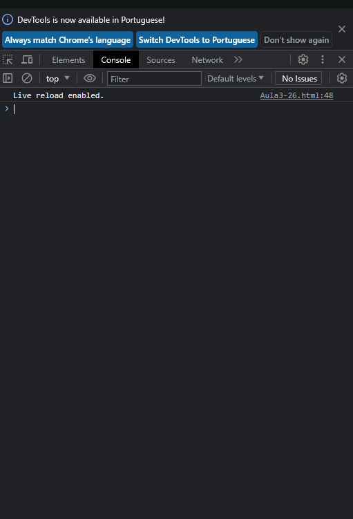
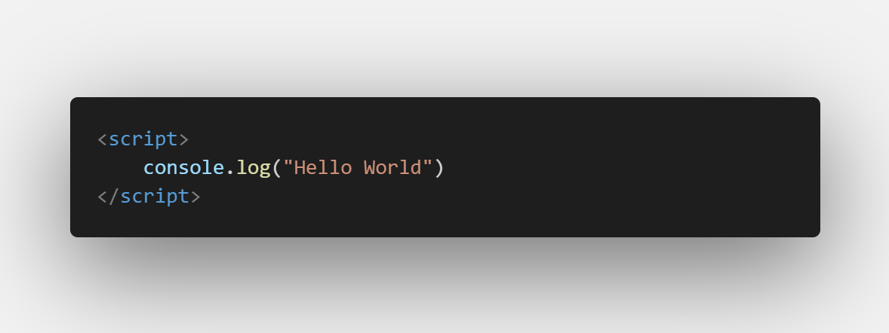
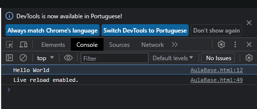

3/26 - Console
"Console" é um termo que os programadores frequentemente usam para se referir a uma ferramenta de desenvolvimento. Essa ferramenta está disponível em ambientes de programação, como navegadores da web e ambientes de execução de código, como o Node.js. Sua funcionalidade é crucial para o desenvolvimento de software, pois permite interagir diretamente com o ambiente de execução do código e fornece maneiras de depurar e testar.

A funcionalidade principal do console é permitir que os programadores exibam mensagens, erros, variáveis e outros tipos de informações durante a execução do código. Isso é especialmente útil para depurar problemas e entender como o código está se comportando em tempo real. O console também pode ser usado para testar trechos de código, executar comandos e verificar o estado das variáveis.
Agora que entendemos o que é o console, podemos relacioná-lo à tag console.log em JavaScript. O console.log é um método embutido na linguagem que permite que os programadores enviem mensagens ou valores para o console durante a execução do código. Isso é extremamente útil para acompanhar o comportamento do programa e verificar resultados sem a necessidade de exibir informações diretamente na interface do usuário.
Para usá-lo, basta escrever console.log(valor) no código JavaScript, onde "valor" é o que você deseja imprimir no console. Por exemplo:

